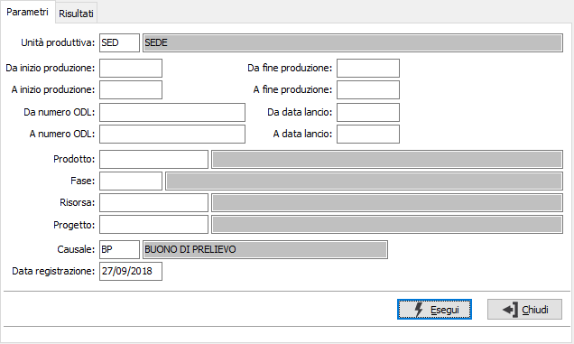
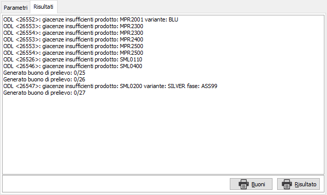

Generazione buoni di prelievo
La funzione effettua la generazione dei buoni di prelievo selezionando gli ODL lanciati che non hanno ancora generato buono di prelievo ed effettua la generazione di un buono per risorsa; la generazione tiene conto di eventuali giacenze e/o disponibilità del magazzino associato alla risorsa. La generazione dei buoni di prelievo può essere effettuata anche contestualmente al lancio.
Nei parametri, riferiti sempre agli ODL, oltre i normali limiti di selezione quali numero ODL, date di inizio, fine produzione e lancio, prodotto ecc. viene richiesta l'unità produttiva con proposta l'unità produttiva di default valida per l'utente connesso ad OS1; è possibile solo scegliere l'unità produttiva, se gestite in configurazione le unità produttive multiple. Se attiva la gestione dei progetti sarà possibile indicare anche il singolo progetto.

La pressione sul pulsante Esegui determina l'inizio dell'elaborazione dei buoni di prelievo.

Nella pagina vengono visualizzati i risultati della generazione; qui vengono indicati i messaggi di informazione relativi ai buoni generati, eventuali messaggi di errori relativi al controllo giacenze che, in base alla configurazione, potranno portare all'interruzione della generazione senza che nessun buono di prelievo venga generato. La pagina dei risultati può essere stampata utilizzando l'apposito pulsante Risultato.
Con il pulsante Buoni può essere eseguita direttamente la stampa dei buoni di prelievo generati, se non ci sono stati errori che abbiano interrotto la generazione.